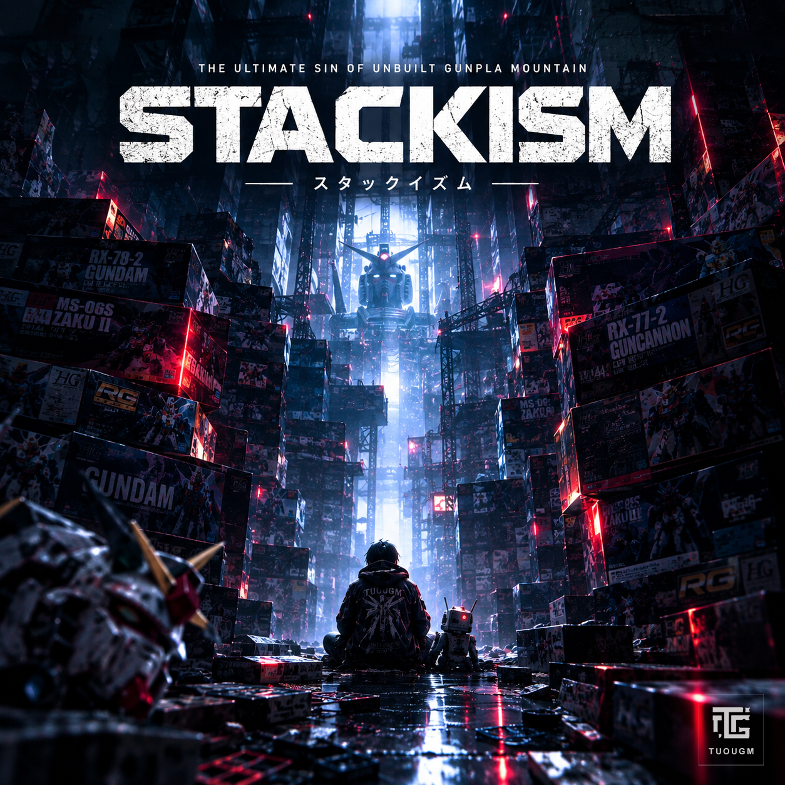
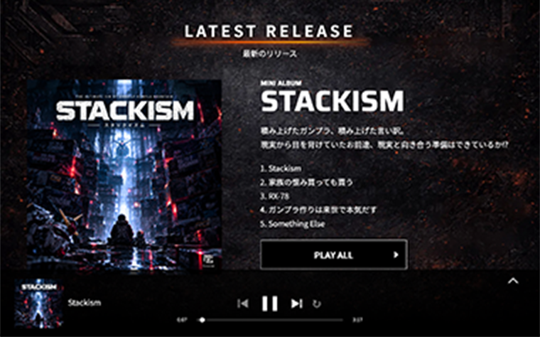
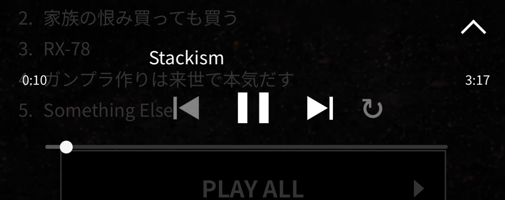
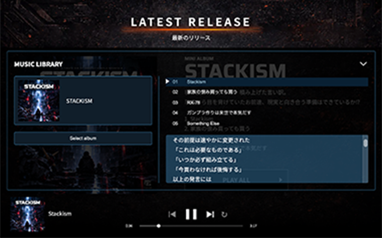
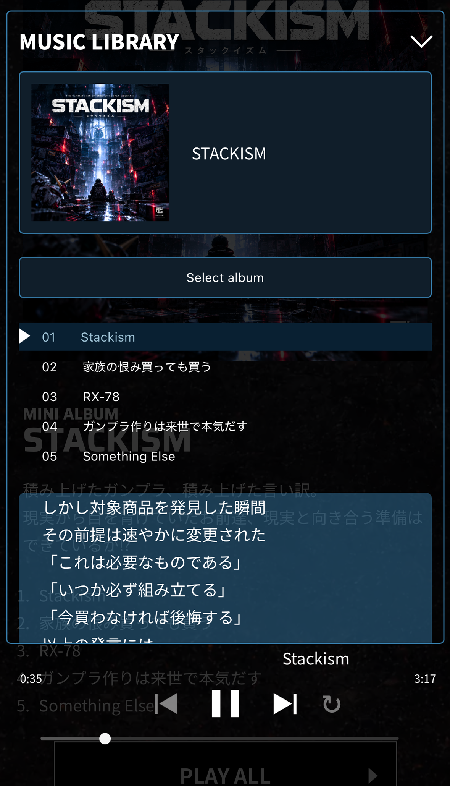
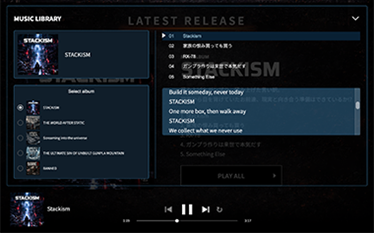
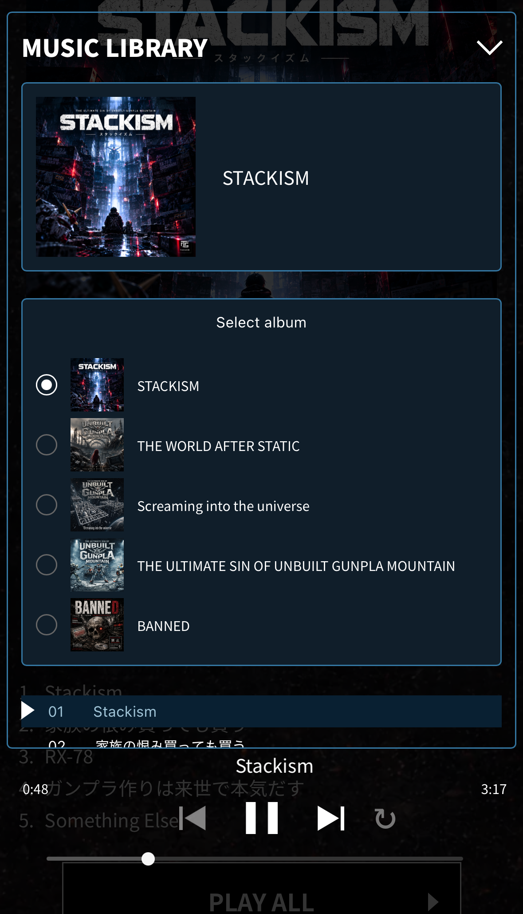

罪プラの逆襲
ガンプラ × インダストリアルメタルの
音楽プロジェクト


LATEST RELEASE
最新のリリース

MINI ALBUMSTACKISM
ガンプラモデラーの闇を叩きつける衝撃作完成！
現実から目を背けていたお前達、現実と向き合う準備はできているか⁉︎
- Stackism
- 家族の恨み買っても買う
- RX-78
- ガンプラ作りは来世で本気だす
- Something Else

ABOUT
THE ULTIMATE SIN OF
UNBUILT GUNPLA MOUNTAIN は
hard core punk, thrash metal,
new core などのバックグラウンドを持つ
世界初の“ガンプラバンド”。
ガンプラあるあるをヘビーなサウンドに乗せて
叫ぶガンプラモデラー応援バンドです。
音楽好きでガンプラ好きには
必ず刺さる楽曲を現在制作・公開中！
HOW TO USE THE PLAYER
当サイトは、音楽を聴くだけでなく、アルバムや曲を自由に選べる音楽ライプラリ、そしてサイトを巡りながら再生を続けられる機能を備えてえています。
ここでは、基本的な使い方をわかりやすくご組介します
-
01PLAY / PAUSE


サイト下部にあるプレイヤーは、ページを移動してもそのまま再生され続けます。
-
02MUSIC LIBRARY


プレイヤー右上の△をクリックでライブラリが展開し再生中のアルバムの曲を選択でき、再生中の曲の歌詞も確認できます。
-
03ALBUM SELECT


「Select album」をクリックでアルバムが選択可能です。


MUSIC
ALBUM

THE ULTIMATE SIN OF UNBUILT GUNPLA MOUNTAIN
-
IS THIS EVOLVED OR WRECKED？
-
いまどきのガンプラ情報量エグい
-
仕事する暇あっらガンプラ作れ
-
NO EXCUSE
-
8UN674
-
Ever since 1981
-
ニッパー片手に
-
色もついてるし、スナップフィットだから接着剤もバテも塗料もガンプラには必要ないってよ
-
ガンプラ系YouTuberの憂鬱
-
THE ULTIMATE SIN OF UNBUILT GUNPLA MOUNTAIN
-
PAYBACK
-
積みプラは罪？
-
魔改造中毒
-
Just picture a world ruled by Gunpla
-
Chase the Ideal Mobile Suit
SINGLES

BANNED
-
BANNED